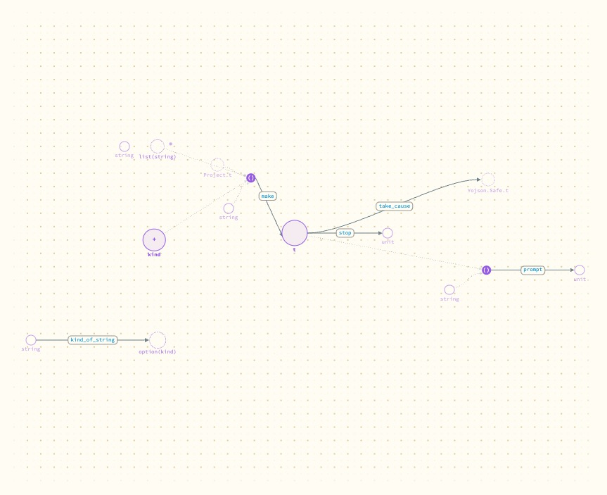

What does a module look like as only its interface?
Much smaller and readable at a glance: Agent goes from 18 definitions to the 8 it exports, and its hidden record becomes one plain node. This is a first cut, as a switch for the whole view.
- Why
Andrew wants collapsing a module to its interface to work well visually. The extractor already records which definitions an interface exports and which types it keeps abstract, and nothing used that yet.
- What I did
Added an interface switch to the canvas header. When it is on, the page drops every definition an interface does not export before drawing, and draws an abstract type with no parts. Tried it on Portolan's own
AgentandWatcher.
What happened

t and all its fields.
make builds a t from a kind, a project and some settings; prompt, stop and take_cause use it; kind_of_string stands apart.The second picture is the one a caller needs, and it can be read without zooming. Watcher exports a single function, so it shrinks to one arrow.
A module with no interface file exports everything, so the switch changes nothing for it. That is itself visible: the modules that stay large are the ones with no interface.
- What it means
The data for collapsing is already there and the result is worth having. One switch for the whole view is too blunt, though: the useful thing is to open one module while its neighbours stay collapsed.
- Not done
Collapsing one module at a time in the whole-project view. Showing an abstract type differently from an ordinary one. Any animation between the two states: today the view is redrawn.
- Next
Put it together with the map of modules (entry 7): each module on the map drawn as its interface, opened in place.